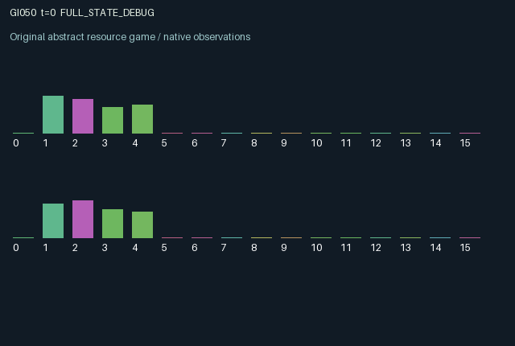

GI050 / LEGACY_ARRAY
astra-d2-00050 — Cross-catalyzed batches with harvest spillover
2 agents5 actions16 observation columns32 original horizonRuntime: PASS
Release verification episode
Untrained uniform legal actions. Actual JAX state sampled along the full original episode; full-state debug camera. No human performance or learning claim.

Run this game
crucibles play --game 50
Start Python locally, then open the address printed by the terminal. Installation, multiplayer, takeover and keyboard controls →
Objective, rewards & ending
Exact task contract
{
"termination": "Original kernel t >= 32; see mechanism and source"
}Declared per-step reward bounds: -1.0 to 1.0. Observability: source_defined.
Rules
Original mechanism document (historical status wording retained)
# astra-d2-00050 — Cross-catalyzed batches with harvest spillover This is a parentless proposal related to generic complementary production, costly public assistance and pollution externalities. It uses no inspected game source or experimental outcome. Novelty, compiler acceptance, operational eligibility and learning effectiveness are not claimed. Each agent owns renewable feedstock, a catalyst culture and one production vessel. Actions are 0 rest, 1 load an empty vessel, 2 release catalyst, 3 harvest a nonempty vessel, and 4 scrub local toxicity. A load transfers at most 0.4 feedstock into the vessel. Releasing catalyst consumes up to 0.4 of one's culture. The resulting cloud persists with geometric decay and helps only the other agent's existing batch in subsequent transitions. The emitter cannot directly accelerate its own vessel with that release. Every existing unharvested batch gains maturity at a slow basal rate plus a contribution from the partner's previously released cloud. Local toxicity divides that rate and gradually reduces quality. Harvest settles using maturity and quality at the start of the step; same-step maturation cannot improve the current harvest. A new batch starts at zero maturity and quality determined by current local toxicity. Loading raises local toxicity; harvesting raises the partner's toxicity in the next state. Scrubbing reduces local toxicity for subsequent steps. This creates an assistance link through catalyst and an opposing externality through harvest waste. All economically relevant state is public. Observation columns 0..15 are time, own/other feedstock, own/other culture, own/other batch quantity, own/other maturity, own/other quality, own/other outgoing cloud, own/other toxicity and own last product yield. Initial feedstock and culture come from the supplied reset key; culture is intentionally correlated with the other initial feedstock. Later transitions are deterministic and need no random draw, although raw_step retains the required key argument. Reward is tanh of four times harvested product, minus 0.18 per unit of harvested raw batch, 0.025 per unit of emitted catalyst and 0.02 for scrubbing. Product equals raw quantity times pre-transition maturity and quality. Thus premature harvest can have negative surplus, and release has an immediate private cost while benefiting another agent later. The tanh bounds rewards in [-1,1]. Rest replenishes feedstock and culture faster; both also recover slowly under other actions. Inventory and pollution caps keep the fixed state bounded. The mechanism permits slow solo production, mutually accelerated production, delayed reciprocation and waste-induced conflict without assuming that any of those behaviors will be learned. Both agents alter persistent clouds and the other's future production conditions. The 32-step horizon retains its terminal state. Loading an occupied vessel or harvesting an empty one performs no transaction; all actions remain legal. No environment code has been executed by its author.
Commands
0Action 0; see mechanism and source
1Action 1; see mechanism and source
2Action 2; see mechanism and source
3Action 3; see mechanism and source
4Action 4; see mechanism and source
Roles & abilities
agent_0 Original legacy agent; see mechanism and source
agent_1 Original legacy agent; see mechanism and source
Observation permissions
Training receives only the original observation rows. Role cameras use declared visibility; debug cameras are explicitly marked. Local benchmark records log debug exposure and role takeover history.
Exact observation layout
[]
Entity visibility & attributes
[]
Actual verification & provenance
Per-game execution receipt
{
"game": "gi050",
"status": "PASS",
"verification_revision": 2,
"source_sha256": "da04c1c669b131236fa68089ca0648478aaf1387c67cf2f21107d9448e3805b7",
"seed": 20261101,
"runtime": {
"jax": "0.4.38",
"numpy": "1.26.4",
"devices": [
"TFRT_CPU_0"
]
},
"dimensions": {
"num_agents": 2,
"observation_size": 16,
"num_actions": 5,
"max_steps": 32
},
"checks": {
"eager_reset": {
"status": "PASS",
"seconds": 0.28260135650634766
},
"observation_spaces_legal_masks": {
"status": "PASS",
"seconds": 0.13526034355163574
},
"eager_step": {
"status": "PASS",
"seconds": 0.44310784339904785
},
"jit_reset": {
"status": "PASS",
"seconds": 0.15481257438659668
},
"jit_step": {
"status": "PASS",
"seconds": 0.213836669921875
},
"eager_jit_integer_parity_float_measurement": {
"status": "PASS",
"seconds": 0.0005202293395996094
},
"jit_vmap_reset": {
"status": "PASS",
"seconds": 0.1921694278717041
},
"jit_vmap_step": {
"status": "PASS",
"seconds": 0.29731249809265137
},
"outer_autoreset_api": {
"status": "PASS",
"seconds": 0.48560142517089844
},
"full_original_horizon_episode_and_render": {
"status": "PASS",
"seconds": 1.5034904479980469
}
},
"human_scores": null,
"browser_controls": "PENDING",
"failures": [],
"elapsed_seconds": 4.207080602645874,
"float_parity_max_abs": 2.9802322387695312e-08,
"numerical_parity": "UNDETERMINED_NONZERO_FLOAT_DIFFERENCE",
"raw_terminal_absorbing": "NOT_PART_OF_ORIGINAL_LEGACY_CONTRACT",
"terminal_outer_reset": "PASS",
"episode_steps": 32,
"scripted_random_returns": [
-0.1380865282844752,
-1.084134286036715
],
"terminal": true,
"demo_information": "FULL_STATE_DEBUG",
"demo_frames": 33,
"render_roles_checked": 2
}Chromium control verification
{
"game": "gi050",
"status": "PASS",
"human_scores": null,
"engineering": true,
"checks": [
"catalog_selected_and_real_native_reset",
"dom_queue_and_native_step",
"second_participant_ownership_and_native_joint_step",
"all_roles_individually_controllable_no_role_cap",
"explicit_debug_camera",
"release_to_pure_ai_without_reset"
],
"seconds": 2.481663465499878
}Original identity and file hashes
{
"id": 50,
"key": "gi050",
"title": "astra-d2-00050 — Cross-catalyzed batches with harvest spillover",
"summary": "",
"tags": [],
"family": "legacy_array",
"dimensions": {
"num_agents": 2,
"observation_size": 16,
"num_actions": 5,
"max_steps": 32
},
"source_sha256": "da04c1c669b131236fa68089ca0648478aaf1387c67cf2f21107d9448e3805b7",
"manifest_sha256": "61e3f29af75a8a1f04996591303e4bdd642383ee905145a7b436e3710297fb12",
"files": [
{
"file": "candidate.py",
"sha256": "da04c1c669b131236fa68089ca0648478aaf1387c67cf2f21107d9448e3805b7",
"bytes": 4914,
"origin": "work/exp_2/astra_generation/discovery_v2/initial/candidate_00050/attempt_00/candidate.py"
},
{
"file": "mechanism.md",
"sha256": "11d2bbeea158d41cfaddf7b7e9c64365a0d725057382457caddd2449839709e3",
"bytes": 3050,
"origin": "work/exp_2/astra_generation/discovery_v2/initial/candidate_00050/attempt_00/mechanism.md"
}
],
"original_status": "LEGACY_SOURCE",
"original_saved_replay": false,
"release_validation": "PASS",
"human_scores": null,
"browser_validation": "PASS"
}